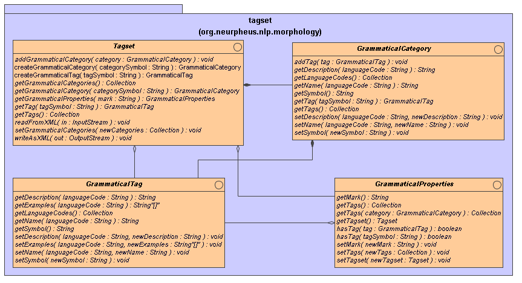

Grammatical properties, tagsets, grammatical categories, grammatical tags.
This package contains classes defining tagsets used by morphological analysers and word form generators. Any tagset can be represented by the {@link org.neurpheus.nlp.morphology.tagset.Tagset} interface. A tagset consist of set of grammatical categories. Each grammatical category consist of a list of grammatical tags representing grammatical properties.
A result of morphological analysis contains information about grammatical properties of an analysed form. These properties can be represented by a mark symbol (list of tag symbols separated by the ':' character) or an instance of the GrammaticalProperties class. This class enables to get list of tags describing grammatical properties and also enables to check if the grammatical properties are described by any grammatical tag.
The following diagram shows all interfaces related to the tagsets.

In most cases a tagset is read from an XML file by the {@link org.neurpheus.nlp.morphology.tagset.Tagset#readFromXML(InputStream)} method. An empty tagset can be created by the {@link org.neurpheus.nlp.morphology.MorphologyFactory#createTagset()}.
Copyright © 2006-2008 Jakub Strychowski, NeurPheus (neurpheus.org)
 This
library is free software; you can redistribute it and/or modify it
under the terms of the GNU Lesser General Public License as
published by the Free Software Foundation; either version 3 of the
License, or (at your option) any later version. This library is
distributed in the hope that it will be useful, but WITHOUT ANY
WARRANTY; without even the implied warranty of MERCHANTABILITY or
FITNESS FOR A PARTICULAR PURPOSE. See the GNU Lesser General Public
License for more details. You should have received a copy of the GNU
Lesser General Public License along with this program; if not, write
to the Free Software Foundation, Inc., 59 Temple Place - Suite 330,
Boston, MA 02111-1307, USA.
This
library is free software; you can redistribute it and/or modify it
under the terms of the GNU Lesser General Public License as
published by the Free Software Foundation; either version 3 of the
License, or (at your option) any later version. This library is
distributed in the hope that it will be useful, but WITHOUT ANY
WARRANTY; without even the implied warranty of MERCHANTABILITY or
FITNESS FOR A PARTICULAR PURPOSE. See the GNU Lesser General Public
License for more details. You should have received a copy of the GNU
Lesser General Public License along with this program; if not, write
to the Free Software Foundation, Inc., 59 Temple Place - Suite 330,
Boston, MA 02111-1307, USA.